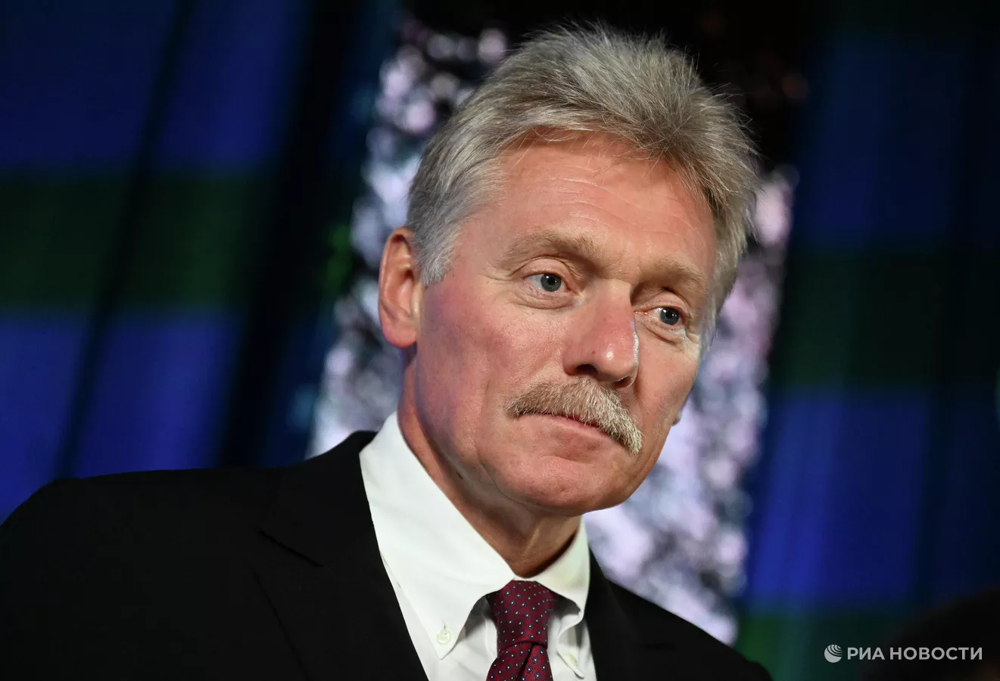

Новости
Китай обратил внимание на сообщения об испытании "Буревестника"
ПЕКИН, 27 окт — РИА Новости. Пекин обратил внимание на сообщения об испытании Россией крылатой ракеты неограниченной дальности "Буревестник" с ядерным двигателем, заявил на брифинге в понедельник официальный представитель МИД КНР Го Цзякунь.
"Мы обратили внимание на соответствующие сообщения", — сказал дипломат, отвечая на просьбу прокомментировать заявление президента России Владимира Путина об испытании "Буревестника".
Ранее Путин заявил, что испытания крылатой ракеты неограниченной дальности "Буревестник" с ядерной энергетической установкой завершены. Крылатая ракета с ядерным двигателем "Буревестник" продемонстрировала высокие возможности по обходу средств противоракетной и противовоздушной обороны, доложил начальник Генштаба Валерий Герасимов президенту Владимиру Путину. Он отметил, что крылатая ракета совершила испытательный полет на 14 тысяч километров и это не предел.
Песков: у Путина на следующей неделе запланированы международные контакты

П.-КАМЧАТСКИЙ, 26 окт - РИА Новости. Международные контакты, совещание с членами правительства РФ и оперативное совещание Совбеза России запланированы в графике президента РФ Владимира Путина на следующую неделю, сообщил пресс-секретарь российского лидера Дмитрий Песков.
"График президента, как всегда, будет насыщенный. В нем будут и международные контакты, президент проведет совещание с членами правительства, оперативное совещание с постоянными членами Совбеза. Ну, и много-много рабочих встреч, которые регулярно и ежедневно проходят", - сказал Песков тележурналисту "России 1" Павлу Зарубину.